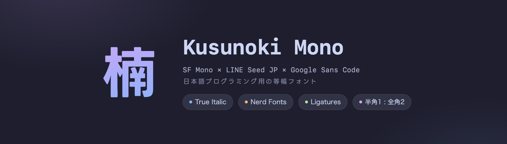

Kusunoki Mono — 日本語プログラミング用の等幅フォント

Apple が磨き上げた SF Mono を日本語の 1:2 グリッドに載せ、小さくても潰れない LINE Seed JP を重ねた、日本語プログラミングのための等幅フォント。イタリックは SF Mono に合う字形だけを Google Sans Code から一字ずつ選んで移植。JetBrains Mono のリガチャと Nerd Fonts のアイコンも入っています。
brew tap peinan/kusunoki-mono && brew install kusunoki-mono特徴
スクリーンショットはすべて実際のビルド成果物でレンダリングしたものです。
半角 1 : 全角 2 の固定グリッドGRID
全角はつねに半角ぴったり2文字ぶん。日本語コメントも罫線の表も、ターミナルでもエディタでも崩れません。

プログラミングリガチャJetBrains Mono
=> や !== がひと目で読める JetBrains Mono のリガチャを、セル幅と SF Mono の背丈に合わせて移植。calt 合成なのでエディタ側でオフにもできます。


トゥルーイタリックGoogle Sans Code
SF Mono の斜体は直立の字形をそのまま傾けたオブリーク。Kusunoki Mono は a や f など14文字だけを Google Sans Code の本物のイタリック字形に置き換えています(●印)。切り替えて見比べてみてください。


濁点・半濁点の拡大MigMix 流
小さいサイズで潰れがちな濁点・半濁点を拡大し、画と重なるところは skip ink で彫り込み。ば と ぱ が小さくても判別できます。


Nerd Fonts 内蔵Icons
Nerd Fonts のアイコンをフルセットで内蔵。プロンプトやファイラー、ステータスラインがそのまま映えます。

小さくても読める日本語LINE Seed JP
日本語は小サイズでの視認性に優れた LINE Seed JP。エディタの現実的なフォントサイズでもくっきり読めます。

かな、1文字ずつ
濁点・半濁点の大きさと位置は、グローバルな一括処理だけでは決まりません。専用のビジュアルツールを作り、濁点かな52字を1文字ずつ見て、必要なものには個別の調整を入れています。
破線が元のマーク位置。倍率・回転・skip ink の彫り幅・位置をかなごとに上書きできます。

実際の画面


スペシメン

インストール
$ brew tap peinan/kusunoki-mono $ brew install kusunoki-mono $ cp "$(brew --prefix)/share/fonts/KusunokiMono-"*.otf ~/Library/Fonts/
- ターミナルやエディタのフォントを
Kusunoki Monoに設定してください - Homebrew 6.0+ では初回のみ
brew trust peinan/kusunoki-monoが必要です - 成果物には Apple SF Mono が埋め込まれるためバイナリ配布はなく、あなたの Mac 上でビルドされます。
JP_SCALEなどのノブを回して自分でビルドする手順は README へ
ライセンス
ビルド成果物は Apple SF Mono を含む個人利用の生成物で、再配布はできません。ソースフォントはそれぞれのライセンスに従います。
| ソース | ライセンス |
|---|---|
| SF Mono | © Apple |
| LINE Seed JP | OFL 1.1 |
| Google Sans Code | OFL 1.1 |
| JetBrains Mono | OFL 1.1 |
| Migu 1M | M+ / IPA |
| Nerd Fonts | MIT + upstream |